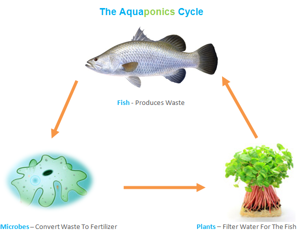
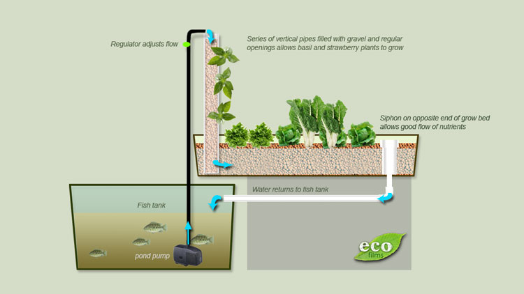

Definição e Simbiose
A Aquaponia é o sistema de produção de alimentos que combina a Aquicultura (criação de animais aquáticos, como peixes) com a Hidroponia (cultivo de plantas em água), em um ambiente de simbiose perfeita.
Neste sistema, não temos apenas dois elementos, mas três organismos fundamentais que se beneficiam mutuamente: Peixes, Plantas e uma Colônia de Bactérias.

O Ciclo de Vida: Peixes, Plantas e Bactérias em equilíbrio.Diferente da agricultura convencional, na Aquaponia não utilizamos terra. As raízes das plantas ficam em contato direto com a água rica em nutrientes. Esse processo é uma verdadeira replicação da natureza, onde os dejetos dos peixes (que seriam tóxicos em sistemas isolados) tornam-se o fertilizante orgânico ideal para as plantas.
O papel das bactérias
A amônia produzida pelos peixes é "alterada" pelas bactérias instaladas em seus filtros ou nas camas de cultivo, deixando de ser tóxica e tornando-se um nutriente facilmente absorvido pelos vegetais.
Garanta a Saúde do seu Ciclo
O segredo da simbiose é o monitoramento. Sem medir, você não sabe se a biologia está funcionando:


Estrutura e Circulação
A água circula pelo sistema com o auxílio de uma bomba de alta eficiência. Ela é levada do reservatório de peixes (geralmente uma caixa d'água) para as partes altas do sistema, como os canos de PVC ou as camas de cultivo, e retorna por gravidade.

A força da gravidade e das bombas movendo a vida no sistema.A Aquaponia é, acima de tudo, uma oportunidade de negócio, um hobby terapêutico e um passo gigante em direção à sustentabilidade residencial. Ao entender como a natureza se comporta, você consegue produzir alimentos orgânicos em qualquer espaço.
Pronto para começar? O próximo passo lógico é entender o passo-a-passo técnico para montar sua primeira estrutura.